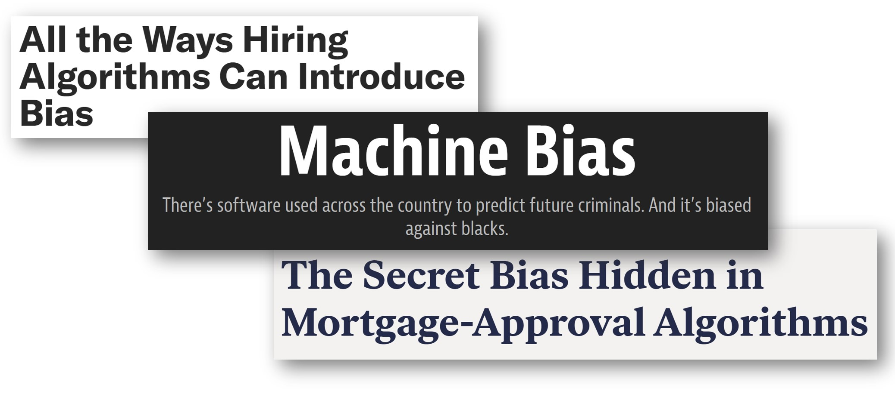

– Harvard Social Scientist and Statistician Gary King
Suppose you wanted to find out whether a machine learning system being adopted - to recruit candidates, lend money, or predict future criminality - exhibited racial bias. You might calculate model performance across groups with different races. But how was race categorised– through a census record, a police officer’s guess, or by an annotator? Each possible answer raises another set of questions. Following the thread of any seemingly quantitative issue around AI ethics quickly leads to a host of qualitative questions. Throughout AI, qualitative decisions are made about what metrics to optimise for, which categories to use, how to define their bounds, who applies the labels. Similarly, qualitative research is necessary to understand AI systems operating in society: evaluating system performance beyond what can be captured in short term metrics, understanding what is missed by large-scale studies (which can elide details and overlook outliers), and shedding light on the circumstances in which data is produced (often by crowd-sourced or poorly paid workers).

Unfortunately, there is often a large divide between computer scientists and social scientists, with over-simplified assumptions and fundamental misunderstandings of one another. Even when cross-disciplinary partnerships occur, they often fall into “normal disciplinary divisions of labour: social scientists observe, data scientists make; social scientists do ethics, data scientists do science; social scientists do the incalculable, data scientists do the calculable.” The solution is not for computer scientists to absorb a shallow understanding of the social sciences, but for deeper collaborations. In a paper on exclusionary practices in AI ethics, an interdisciplinary team wrote of the “indifference, devaluation, and lack of mutual support between CS and humanistic social science (HSS), [which elevates] the myth of technologists as ‘ethical unicorns’ that can do it all, though their disciplinary tools are ultimately limited.”

This is further reflected in an increasing number of job ads for AI ethicists that list a computer science degree as a requirement, “prioritising technical computer science infrastructure over the social science skills that can evaluate AI’s social impact. In doing so, we are building the field of AI Ethics to replicate the very flaws this field is trying to fix.” Interviews with 26 responsible AI practitioners working in industry highlighted a number of challenges, including that qualitative work was not prioritised. Not only is it impossible to fully understand ethics issues solely through quantitative metrics, inappropriate and misleading quantitative metrics are used to evaluate the responsible AI practitioners themselves. Interviewees reported that their fairness work was evaluated on metrics related to generating revenue, in a stark misalignment of goals.
Qualitative research helps us evaluate AI systems beyond short term metrics
When companies like Google and YouTube want to test whether the recommendations they are making (in the form of search engine results or YouTube videos, for example) are “good” - they will often focus quite heavily on “engagement” or “dwell time” - the time a user spent looking at or watching the item recommended to them. But it turns out, unsurprisingly, that a focus on engagement and dwell time, narrowly understood, raises all sorts of problems. Demographics can impact dwell time (e.g. older users may spend longer on websites than younger users, just as part of the way they use the internet). A system that ‘learns’ from a user’s behavioural cues (rather than their ‘stated preferences’) might lock them into a limiting feedback loop, appealing to that user’s short term interests rather than those of their ‘Better Selves.’ Scholars have called for more qualitative research to understand user experience and build this into the development of metrics.
This is the part where people will point out, rightly, that companies like Google and YouTube rely on a complex range of metrics and signals in their machine learning systems - and that where a website ranks on Google, or how a YouTube video performs in recommendation does not boil down to simple popularity metrics, like engagement. Google employs an extensive process to determine “relevance” and “usefulness” for search results. In its 172-page manual for search result ‘Quality’ evaluation, for example, the company explains how evaluators should assess a website’s ‘Expertise/ Authoritativeness/ Trustworthiness’ or ‘E-A-T’; and what types of content, by virtue of its harmful nature (e.g., to protected groups), should be given a ‘low’ ranking. YouTube has identified specific categories of content (such as news, scientific subjects, and historical information) for which ‘authoritativeness’ should be considered especially important. It has also determined that dubious-but-not-quite-rule-breaking information (what it calls ‘borderline content’) should not be recommended, regardless of the video’s engagement levels.
Irrespective of how successful we consider the existing approaches of Google Search and YouTube to be (and partly, the issue is that evaluating their implementation from the outside is frustratingly difficult), the point here is that there are constant qualitative judgments being made, about what makes a search result or recommendation “good” and of how to define and quantify expertise, authoritativeness, trustworthiness, borderline content, and other values. This is true of all machine learning evaluation, even when it isn’t explicit. In a paper guiding companies about how to carry out internal audits of their AI systems, Inioluwa Deborah Raji and colleagues emphasise the importance of interviews with management and engineering teams to “capture and pay attention to what falls outside the measurements and metrics, and to render explicit the assumptions and values the metrics apprehend.” (p.40).
The importance of thoughtful humanities research is heightened if we are serious about grappling with the potential broader social effects of machine learning systems (both good and bad), which are often delayed, distributed and cumulative.
Small-scale qualitative studies tell an important story
Hypothetically, let’s say you wanted to find out whether the use of AI technologies by doctors during a medical appointment would make doctors less attentive to patients - what do you think the best way of doing it would be? You could find some criteria and method for measuring ‘attentiveness’, say tracking the amount of eye contact between the doctor and patient, and analyse this across a representative sample of medical appointments where AI technologies were being used, compared to a control group of medical appointments where AI technologies weren’t being used. Or would you interview doctors about their experiences using the technology during appointments? Or talk to patients about how they felt the technology did, or didn’t, impact their experience?
In research circles, we describe these as ‘epistemological’ choices - your judgement of what constitutes the ‘best’ approach is inextricably linked to your judgement about how we can claim to ‘know’ something. These are all valid methods for approaching the question, but you can imagine how they might result in different, even conflicting, insights. For example, you might end up with the following results: - The eye contact tracking experiment suggests that overall, there is no significant difference in doctors’ attentiveness to the patient when the AI tech is introduced. - The interviews with doctors and patients reveal that some doctors and patients feel that the AI technology reduces doctors’ attentiveness to patients, and others feel that it makes no difference or even increases doctors’ attention to the patient.
Even if people are not negatively impacted by something ‘on average’ (e.g., in our hypothetical eye contact tracking experiment above), there will remain groups of people who will experience negative impacts, perhaps acutely so. “Many of people’s most pressing questions are about effects that vary for different people,” write Matias, Pennington and Chan in a recent paper on the idea of N-of-one trials. To tell people that their experiences aren’t real or valid because they don’t meet some threshold for statistical significance across a large population doesn’t help us account for the breadth and nature of AI’s impacts on the world.
Examples of this tension between competing claims to knowledge about AI systems’ impacts abound. Influencers who believe they are being systematically downranked (‘shadowbanned’) by Instagram’s algorithmic systems are told by Instagram that this simply isn’t true. Given the inscrutability of these proprietary algorithmic systems, it is impossible for influencers to convincingly dispute Instagram’s claims. Kelley Cotter refers to this as a form of “black box gaslighting”: platforms can “leverage perceptions of their epistemic authority on their algorithms to undermine users’ confidence in what they know about algorithms and destabilise credible criticism.” Her interviews with influencers give voice to stakeholder concerns and perspectives that are elided in Instagram’s official narrative about its systems. The mismatch between different stakeholders’ accounts of ‘reality’ is instructive. For example, a widely-cited paper by Netflix employees claims that Netflix recommendation “influences choice for about 80% of hours streamed at Netflix.” But this claim stands in stark contrast to Mattias Frey’s mixed-methods research (representative survey plus small sample for interviews) run with UK and US adults, in which less than 1 in 5 adults said they primarily relied on Netflix recommendations when deciding what films to watch. Even if this is because users underestimate their reliance on recommender systems, that’s a critically important finding - particularly when we’re trying to regulate recommendation and so many are advocating providing better user-level controls as a check on platform power. Are people really going to go to the trouble of changing their settings if they don’t think they rely on algorithmic suggestions that much anyway?
Qualitative research sheds light on the context of data annotation
Machine learning systems rely on vast amounts of data. In many cases, for that data to be useful, it needs to be labelled/ annotated. For example, a hate speech classifier (an AI-enabled tool used to identify and flag potential cases of hate speech on a website) relies on huge datasets of text labelled as ‘hate speech’ or ‘not hate speech’ to ‘learn’ how to spot hate speech. But it turns out that who is doing the annotating and in what context they’re doing it, matters. AI-powered content moderation is often held up as the solution to harmful content online. What has continued to be underplayed is the extent to which those automated systems are and most likely will remain dependent on the manual work of human content moderators sifting through some of the worst and most traumatic online material to power the machine learning datasets on which automated content moderation depends. Emily Denton and her colleagues highlight the significance of annotators’ social identity (e.g., race, gender) and their expertise when it comes to annotation tasks, and they point out the risks associated with overlooking these factors and simply ‘aggregating’ results as ‘ground truth’ rather than properly exploring disagreements between annotators and the important insights that this kind of disagreement might offer.
Human commercial content moderators (such as the people that identify and remove violent and traumatic imagery on Facebook) often labour in terrible conditions, lacking psychological support or appropriate financial compensation. The interview-based research of Sarah T. Roberts has been pioneering in highlighting these conditions. Most demand for crowdsourced digital labour comes from the Global North, yet the majority of these workers are based in the Global South and receive low wages. Semi-structured interviews reveal the extent to which workers feel unable to bargain effectively for better pay in the current regulatory environment. As Mark Graham and his colleagues point out, these findings are hugely important in a context where several governments and supranational development organisations like the World Bank are holding up digital work as a promising tool to fight poverty.
The decision of how to measure ‘race’ in machine learning systems is highly consequential, especially in the context of existing efforts to evaluate these systems for their “fairness.” Alex Hanna, Emily Denton, Andrew Smart and Jamila Smith-Loud have done crucial work highlighting the limitation of machine learning systems that rely on official records of race or their proxies (e.g. census records), noting that the racial categories provided by such records are “unstable, contingent, and rooted in racial inequality.” The authors emphasise the importance of conducting research in ways that prioritise the perspectives of the marginalised racial communities that fairness metrics are supposed to protect. Qualitative research is ideally placed to contribute to a consideration of “race” in machine learning systems that is grounded in the lived experiences and needs of the racially subjugated.
What next?
Collaborations between quantitative and qualitative researchers are valuable in understanding AI ethics from all angles.
Consider reading more broadly, outside your particular area. Perhaps using the links and researchers listed here as starting points. They’re just a sliver of the wealth that’s out there. You could also check out the Social Media Collective’s Critical Algorithm Studies reading list, the reading list provided by the LSE Digital Ethnography Collective, and Catherine Yeo’s suggestions.
Strike up conversations with researchers in other fields, and consider the possibility of collaborations. Find a researcher slightly outside your field but whose work you broadly understand and like, and follow them on Twitter. With any luck, they will share more of their work and help you identify other researchers to follow. Collaboration can be an incremental process: Consider inviting the researcher to form part of a discussion panel, reach out to say what you liked and appreciated about their work and why, and share your own work with them if you think it’s aligned with their interests.
Within your university or company, is there anything you could do to better reward or facilitate interdisciplinary work? As Humanities Computing Professor Willard McCarty notes, somewhat discouragingly, “professional reward for genuinely interdisciplinary research is rare.” To be sure, individual researchers and practitioners have to be prepared to put themselves out there, compromise and challenge themselves - but carefully tailored institutional incentives and enablers matter.
I look forward to reading your responses. Create a free GitHub account to comment below.